Reports cells can have drill-down information that allows them to be clicked in the preview to drill-down to an enquiry on the related record, a list of related records (e.g. transactions that make up a total), another report, or even a website.
Analysis Reports automatically get drill down information for every line/figure (not totals)
General Ledger reports get automatic drill-down information for account codes and descriptions, and also for ranges of accounts when using a subsummary.
In addition to the automatic drill-down information, cells can optionally supply a relational search Hot Link that will select records to drill down to when clicked in the preview.
In its simplest form, this is a Relational Search, ending in the file to link to, e.g.
[Name] // will display all names
[transaction] // will show all transactions in the All tab in the transaction list
The final example displays just the details in a given period range.
Since the relational search is invoked only when the user clicks on the hot link in the Preview, you can't use report variables (like PeriodNum) directly in the search functions, but you can use them indirectly by calculating your hot link. e.g:
="[Account:Type = `CA`][Transaction:Period >= " + (PeriodNum
- Mod(PeriodNum, 100)) + "][Detail:Detail.Account=`" + Account.Code+ "-@`]"
This might result in a hot link such as:
[Account:Type = `CA`][Transaction:Period >= 204][Detail:Detail.Account=`3000-@`]
which is a valid hot link specification.
Note: Hot links are evaluated only when clicked in the report preview. You must test your links before unleashing a report on an unsuspecting populace.
The window to open when the hot link is activated is determined by the file name of the last term, as shown in the following table:
FileName Default Window
Account Account Enquiry
Name Customer Sales Enquiry Product Product Sales Enquiry
Transaction Transaction List (All tab) Detail Detail Line List (All Lines tab) Job Job List (All tab)
Job Sheet Job Sheet List (All tab)
These defaults can be overridden by appending a special “dispatch” code, either as a prefix before the first square bracket (separated by a colon), or after the last [...] term. For example, the addition of the lidi dispatch code in the link below causes the transactions to be displayed in the debtor invoice tab of the transaction list, as opposed to the All tab (thus giving all debtor invoices that involve a fixed asset). The two examples below are equivalent:
|
|
|---|---|
|
|
|
|
|
|
|
|
|
|
|
|
|
|
|
|
|
|
|
|
|
|
You can link to a website or other form of URL from the report. This will be active in the preview window or in a saved pdf. The entire hot link must constitute a valid URL (there are no square brackets). For example the following will link to a cool website in your default browser:
The following will create an email in your email program:
lidi:[Account:Type = `FA`][Transaction]
mailto:info@myemail.com?subject=Response to mailout
[Account:Type = `FA`][Transaction]lidi
When you want to link to a named sidebar in a list, and there is no specific dispatch code, use the prefix form and append the sidebar name. Thus the following example will display the accounts with category “COGS” in the Cost of Sales and Expenses sidebar tab of the accounts list:
liac:[account:category=`COGS`]Cost of Sales and Expenses``
Note: When linking to a list (as opposed to any enquiry), any filter in the list will be reset.
You can link to another report by using the “repo:report=” dispatch code with a null search. This is followed by the report name (in quotes) and an optional list of parameters and values. For example, the following will generate and “Drill down to” the Profit & Loss comparison report from April to June 2010.
repo:report='Profit and Loss Comparison' from='1/4/10' to='1/6/
10'
|
|
|---|---|
|
|
|
|
|
|
|
|
|
|
|
|
|
|
|
|
|
|
|
|
|
|
|
|
|
|
|
|
|
|
|
|
|
|
|
|
|
|
|
|
|---|---|
|
|
|
|
|
|
|
|
|
|
|
|
|
|
|
|
|
|
|
|
|
|
|
|
|
|
|
repo:report="repname" param="value"
in quotes and no extra spaces, e.g. my_param="3"
1 They need to be saved into the Invoices (or Statements) folder in the Plain folder in the MoneyWorks Custom Plug-ins folder↩︎
2 The PeriodNum can be viewed by pressing the Shift key while the Command>Open/Close Period in open.↩︎
Whenever you enter a transaction into MoneyWorks you are recording more than simple accounting information. For example, if you are using the debtors and product system each sale will record information about what that customer purchased. Over a period of time these transactions will build up, and within MoneyWorks you will have a valuable resource of customer buying habits, product sale patterns and so forth.
This information is not (necessarily) accounting information, but is of great potential value for management and marketing purposes. You can access this information at a simple level by using the Customer and Product sales enquiry screens. Analysis reporting in MoneyWorks offers an even more powerful way of extracting this information.
Analysis reports are quick to set up, and produce what is basically a weighted cross tabulation (cross tab) of selected transaction information. Cross tabs have been used for many years to collate data for decision making purposes.
Some of the more common sorts of analysis (e.g. customer by product, product by customer) come presupplied with MoneyWorks. However you can create your own reports as you need them, and save these for reuse at any time. The sorts of analysis that you can do include (but are by no means limited to):
Breakdown of Products Sold by Customer
Breakdown of Costs (or Income) by Job
Breakdown of Customer Purchases by Period
Breakdown of Product Sold by Customer by Period
Breakdown of resource use by job
Breakdown of resource use over time
Note that you don’t have much control of the layout of an analysis report. If you want more control of the formatting and layout, you can (with a bit more effort) use the Analyse function in a custom report.
This tutorial, which takes about ten minutes, steps you through creating and using Analysis reports, and will (hopefully) give you an appreciation of what they are and how they can be used. Although designed to be used with the “Acme Widgets” tutorial file, you can use this tutorial with your own accounts if you want—there are no side effects (but you will obviously get different results).
Analysis reports can provide information from either the transaction file or the job sheet item file, both of which hold “raw data”, and hence can be usefully analysed. In this tutorial we will use the transaction file to create an analysis report to show who has purchased specific products.
The New Analysis window will be displayed.
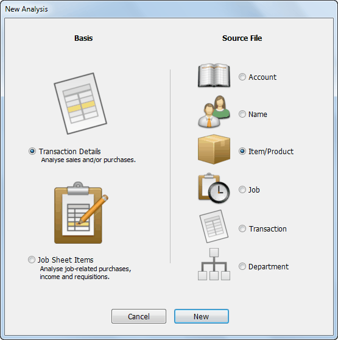
Set the Basis to Transaction Details and the Source File to Item/Product as shown
An analysis report is always based on a Source File, which is used to select the transactions to be analysed1. In our example, we want to report on sales of specific products, so the product file will be the source file.
The Basis indicates where the information that we are analysing comes from. For this tutorial we want the transactions.
Click New
The Analysis Definition window opens.
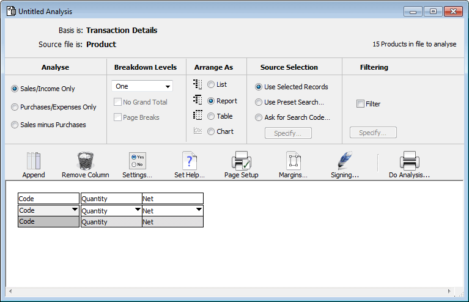
In this window we can specify the information that we want to appear on the analysis, and how the report will be formatted.
In the Analyse part of the window, click Sales/Income Only
As this analysis is concerned with who purchased the selected products, we only want to look at sales.
This determines how the information is displayed in the report.
The bottom part of the window displays the structure of the analysis. The fields on which the analysis will be done are in the left hand columns. The default setting has one label column called Code. The remaining columns show the
information that will be printed, and are currently set to Quantity and Net. We’ll look at the default report, even though it is not quite what we want.
Click the Do Analysis... button
The Analysis settings window will be displayed. We use this to select the output options and time interval for the analysis.
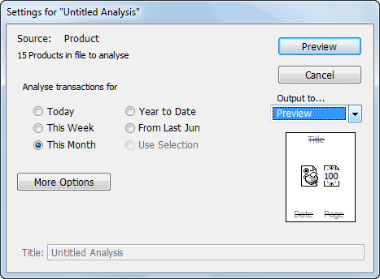
If your’s does not look like the one above, click the Fewer Options button.
Click the Year to Date radio button
We’ll look at all sales for the year to date.
Set the output to preview and click the Preview button
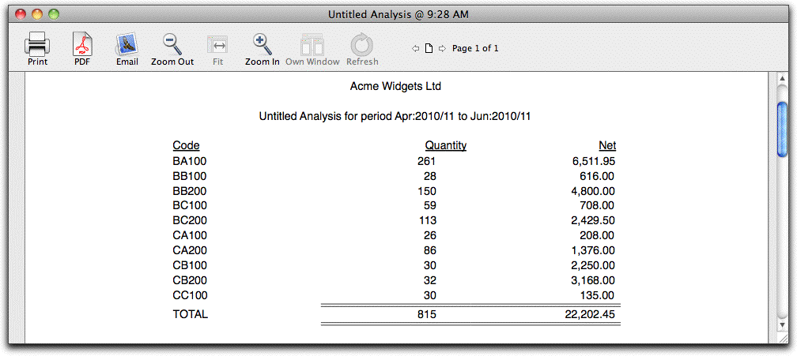
The analysis report will be displayed.The report consists of three columns, each one corresponding to one of the columns in the setup window. To prepare the report MoneyWorks did the following (more or less):
Stepped through each product in the product file (the source file)
For each product, found all details lines in transactions that occurred this financial year.
Added up the quantity and net for the detail lines.
The summary information for that product was then printed.
The analysis setup window will be the front-most window.
The report we just previewed had a single level of breakdown which was product. We want the report to be of product by customer, so we need to add another breakdown level.
A new column “NameCode” will be displayed.
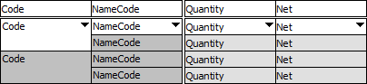
This is a two level breakdown. The first level is for the product, and the second is for the customer. The columns are already set to this, so we don’t need to change them.
At the top of each column is a column heading (see diagram). The heading defaults to the name of the column contents. We’ll change the headings for the label columns.
The first column displays Product details, and the next Customer.
Click the Do Analysis... button
The Analysis settings window will be displayed.
Click Preview
The analysis report will be displayed.
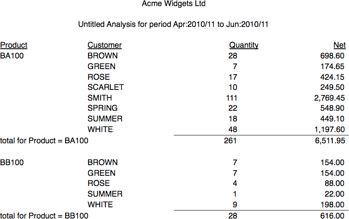
For each product there is a list of all the customers (the second report column) who purchased the product in the time period. The quantity purchased and the amount spent (ex GST) for each customer are displayed.
The analysis setup window will be the top-most window.
Let’s add the percent margin that we are getting from each customer for each product. To do this we need to add another column to the report.
Click the Append toolbar button
A new column (labelled GST) will be appended to the existing columns. We want to set this to display the percent margin.
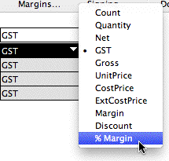
The column entries and heading will change to % margin
Click Do Analysis..., then click Preview
The Analysis report will preview.
The percent margin column has been added. Notice that this is the same regardless of who buys a particular product. This indicates that we are not discounting these products to individual companies. The bottom line of the report (the total over all products and customers) will show the average margin.
Close the Preview window
At present the report is printing all products in the product file. If we only want to do some of the products, we can highlight them in the product file and reprint the analysis. Let’s do just bronze widgets.
The product list window will be displayed.
Remember that to highlight more than one item in a list you hold down the control/command key and click.
We want to leave the window open and return to the analysis window. To do this we need to bring the analysis setup window to the front.
If you can’t see it, a list of open windows is maintained in the Windows menu. Choose “Untitled Analysis” from this.
The number of records in the source file that will be analysed is displayed in the top of the window. This should now say six—previously it was seventeen, being all the records.
Preview the report and check that only the highlighted products are included
Close the preview window
We’ll change the breakdown slightly. Instead of breaking it down by product code, we’ll break it down by product size. The size information has been stored in field Category2 of the product record.
column
A complete menu of available breakdown fields will be displayed.
Choose product.category2 from the menu and Preview the report
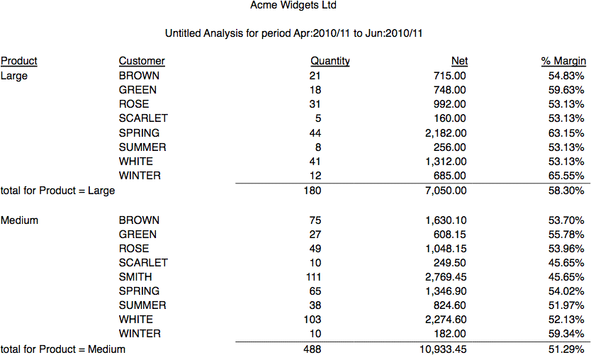
Instead of product codes, the report is broken down by size of product. This is one way that we can use the category fields in MoneyWorks to supply useful management information.
We’ll now change the report to give us a breakdown of product size by region. Acme Widgets have put regional information into the Category1 field of their customer records.
Set the NameCode pop-up menu in the second column to
Name.Category1 and Preview the analysis
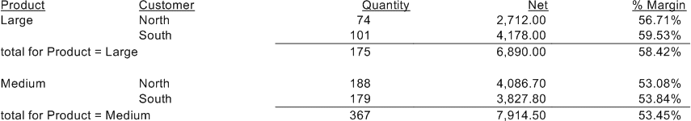
Close the preview window
Viewing the analysis as a list is only one of four ways the analysis can be displayed. The Report view is a slightly altered form of the list view (try setting the Arrange As option to Report and look at the report).
In the table format one field is displayed horizontally across the page, with the remainder displayed vertically down the page. Only one calculation can be shown on the report itself.
Change the Arrange As option to Table
Notice that only one calculation value (currently quantity) can be used.
The Detail Line Items list window will be displayed with just the lines of the transaction that comprise the results.
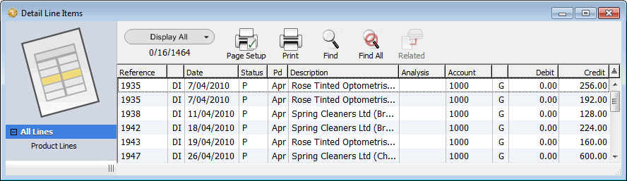
2. Close the Detail Lines list window, then the preview window
You can also view your analysis as a chart:
1. Change the Arrange As option to Chart and Preview the analysis
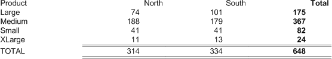
From the preview of an analysis report, you can drill down on a data point to see the underlying records.
Move the cursor over one of the table values (but not a total) until it turns into a magnifying glass, and click
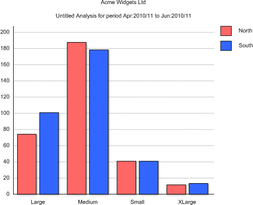
To select the source records (products) that we wanted to analyse, we highlighted them in their list window, and then did the analysis. This is useful for doing ad hoc reports, but we can also preset the search pattern so that we can use the report again for the same records.
Set the Use Preset Search option under Source Selection
The Find window will open.
We can specify a search based on any attributes in the source file. We’ll set this report to do all small widgets. The size is stored in the category2 field.
The search pattern should read “Category2 Starts with Small”.
It will only include those products with “Small” in the category2 field.
You can change the search criteria by clicking the Specify button. Try setting the search to “Category1 is not Bronze” and redoing the analysis.
The third way that source records can be specified is to have MoneyWorks ask at the time the report is to be printed.
Set the Ask for Search Code option under the Source Selection
The Setup Search window will be displayed.
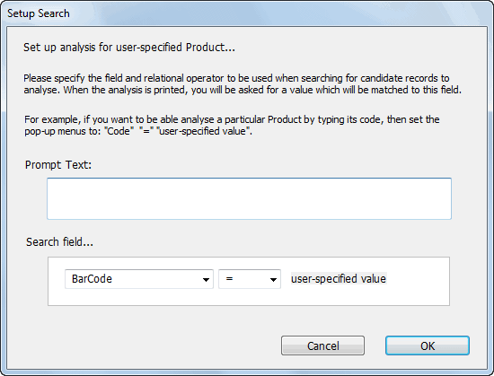
In this you can specify the text of a message to ask when the report is selected for printing, and also which field to search on and how to search.
In the Prompt Text field type “Please enter the size”
Set the relationship pop-up menu to =
Click OK
The Setup Search window will close.
Click the Do Analysis... button
The Analysis Criterion window will be displayed.
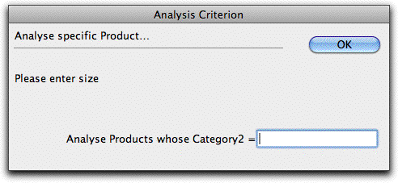
The analysis will be done for large widgets only.
Close the preview window, and redo the analysis this time typing “small” when prompted.
Close the preview window
Once you have created the analysis report you can save it for later use.
You will be asked if you want to save the analysis
Click Save
The standard file creation dialog box will be displayed.
The report should be saved in the Reports folder in the MoneyWorks Custom Plug-ins folder—the file creation dialog box should already be “pointing at” to this.
You can also save the report in a folder located in the Reports folder. If you do this the report will be in the hierarchical menu in the Reports menu that corresponds to that folder.
The Analysis Definition window will close. The report will be saved and is now accessible from the Reports menu.
You will need to enter the size when prompted.
If you want to change the layout or specifications of the report, you need to open the report by using the Open command in the File menu.
You have successfully created an analysis report.